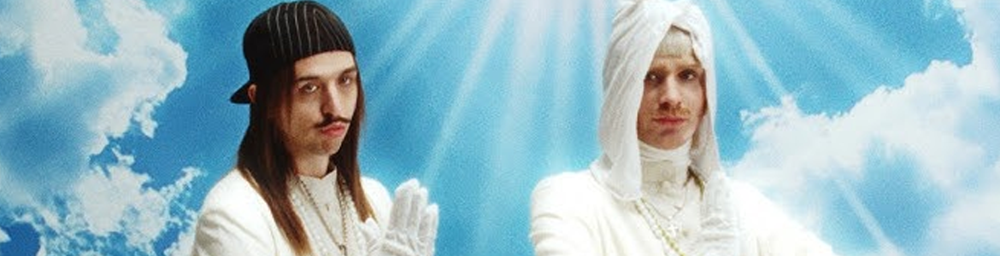

Is Unity AOTY?
.png)
• Published 12/03/2025
May is the month of Eurovision, and last year, I bailed on watching it. Despite my bailing, I caught wind of what was going on via Twitter, and received the unfortunate news that the Dutch entry was disqualified for alleged assault on a cameraperson. The Dutch entry was called Europapa, a heartfelt gabber song about celebrating the diversity in Europe, and a tribute to the singer’s father, the singer being one Joost Klein.
Joost was unjustly disqualified from Eurovision, with the video evidence that the cameraperson took essentially disproving their own case. A lot of people have told Joost to simply “get over” being disqualified from the biggest singing competition in the world, a sentiment I not only don’t agree with, but is also insanely rude. It hurts to not qualify, but it must hurt even harder to have that qualification stripped away from you.
Still, this didn’t stop Joost. That summer, he announced that a new album was on the way, and released a few singles throughout, like Luchtballon, Filthy Dog, and Why Not??? . The name of the album was originally Gabberpop, but was later changed to Unity.

Unity is, to me, an all-encompassing album. It truly lets you peer into the tender insanity that is Joost’s mind. The album is a reflection of a sort of before and after, with some songs being made right after the disqualification, filled with disdain and resentment, and others simply accepting the fact that it happened, and trying his best to brush it off. Now, Unity, or the gabber genre in general, is NOT for everyone. Imagine songs by artists like Charli XCX or Sophie, but very European, and somehow a little wilder (mostly in terms of lyrics). I was heavily bumping BRAT during the summer, and I very much enjoyed Europapa, so I was very excited for the album.
It came out on February 12th of this year, and it blew me out of the water. Besides the few albums I have on CD, I don’t listen to full albums much, but this is one of those albums where I had to go back and listen to it in full, because it’s truly like if the 7 stages of grief were turned into electronic hip-hop songs. I think the majority of the album is in my playlist and in my daily rotation of songs. And now, my ranking:
1. Filthy Dog
2. United by Music Ft. Tommy Cash
3. Kunst Und Musik
4. Luchtballon
5. Gabberland
6. Europapa + Europapa Outro
7. 1 Ft. Scooter
8. Discozwemmen Ft. Spinvis
9. Friesenjung Ft. Ski Aggu and Otto Waalkes
10. Last Man Standing
11. We’ll Meet Again Ft. Stuntje
12. Epiphany of Love: The Origin Ft. junglebobby and Aldo2Swag
13. BOOM BOOM!!!!!
14. Why Not???
15. Internetcafe 24/7
Peace, Love, UNITY and Respect. Unity 4ever.
- Where to listen
- Apple Music
- Spotify
- Youtube Music